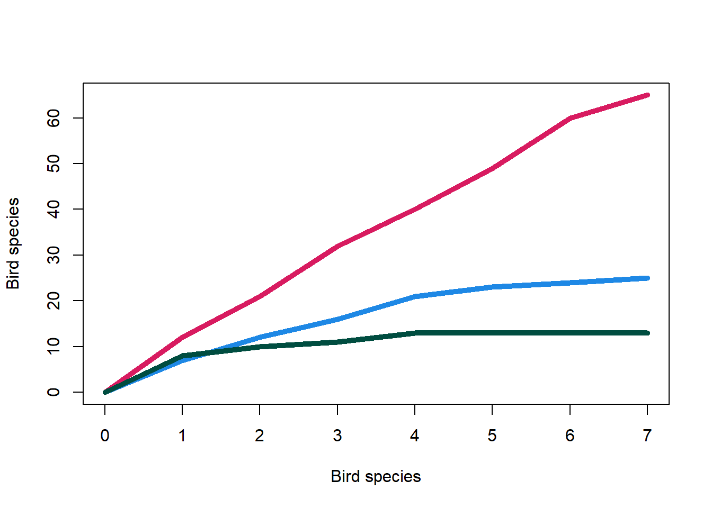

Chapter 14 Rarefaction
We are going to create a rarefied abundance table in this chapter. This can be a controversial topic. Please make your own decision if you want to do this or not in your own analysis.
14.1 Rarefaction: setup

We will use a new notebook called "4-rarefaction.ipynb". Add the following to the top of this new notebook to load the required libraries/packages and data.
#Libraries
library("phyloseq")
library("microbiome")
library("vegan")
library("IRdisplay")
#Load phyloseq object
load("phyloseq.RData")
#Load ASV count vector
load("num_asvs_vec.RData")Ensure you add markdown and code cells to this notebook to give yourself a good structure.
14.2 Rarefaction curve

Prior to rarefying our data we need to determine the depth we want to use. We can carry this out with a rarefaction curve.
A rarefaction curve is produced by randomly sampling the sequences in a
sample (without replacement). The rarefaction curve extracts
the number of unique ASVs in the first N sequences of each sample.
N is equal to the step size which
we will set as 50 (step = 50).
This is followed by the number of unique ASVs found in 2N, then 3N etc.
The plot will show the number of total unique ASVs it has found against the depth it has currently sampled. Therefore, after 10 steps it will be at a depth of 500 on the x-axis (50 * 10) and it will show how many unique ASVs it has currently discovered from all 10 samplings.
14.2.1 Bird analogy
You are cataloguing the bird diversity (ASV diversity) in three forests/woods in Hampshire (3 samples of our abundance table). You record your findings over a week for each forest. Your record on the cumulative amount of unique species you find over the 3 separate weeks are in the table below:
| Day | New Forest (93900 acres) | Telegraph woods (50 acres) | Old Lords wood (4.67 acres) |
|---|---|---|---|
| 1 | 12 | 7 | 8 |
| 2 | 21 | 12 | 10 |
| 3 | 32 | 16 | 11 |
| 4 | 40 | 21 | 13 |
| 5 | 49 | 23 | 13 |
| 6 | 60 | 24 | 13 |
| 7 | 65 | 25 | 13 |
This can then be plotted in a rarefaction plot like below.

In this case we can be fairly confident that seven days is enough to find all the birds we can in the Old Lords wood (green). I.e. the sampling depth is enough. Just like bird watching, it is very hard to find all the species present in a sample with metabarcoding or shotgun metagenomics. This can be caused by our barcodes not picking up all species, our sampling wasn't perfect, some species are very rare, or errors that DNA sequencing introduces.
A week seems like a good amount for sampling the Telegraph woods (Blue) but it is possible that some more species have not been recorded.
Strikingly, a week does not appear to be enough time for the New Forest (red). The amount of new species decreased to 5 on day 7 but the curve has not yet plateaued.
This hopefully helps you understand why rarefaction curves are a useful measure of how well we have captured the diversity of samples at different depths.
14.2.2 Rarefaction curve: simple plot
We'll use vegan to create our rarefaction curve like we did in
Chapter 9.
#Extract ASV table as data frame
asv_abund_df <- as.data.frame(t(phyloseq::otu_table(pseq)))
#Rarefaction curve
#Save as png file
png(filename = "./rarefaction_plot.png", res = 300,
units = "mm", height = 200, width = 300)
#Produce plot
vegan::rarecurve(
x = asv_abund_df, step = 50,
xlab = "Read depth",
ylab = "ASVs"
)
dev.off()
#Display the plot in jupyter notebook
IRdisplay::display_png(file="./rarefaction_plot.png")14.2.3 Rarefaction curve: better plot

It is a useful plot but we can make it better! We will do that with the following addition:
- Adding extra options to
vegan::rarecurve():lwd: Sets the line width of the plot.label: Turn the sample labels on (T) or off (F). We will turn them off as it is hard to read them all.sample: Draws a vertical line at the specified depth. Additionally, draws a horizontal line for each sample showing how many ASVs were discovered at the sampling depth.
We will initially use our minimum sample depth as our rarefaction/sampling depth. This is a good idea if it seems like a good amount as it will allow us to keep all our samples after rarefaction. Any samples with a lower depth than are final rarefaction size will be removed.
#Improved plot saved as file
png(filename = "./rarefaction_plot.png", res = 300,
units = "mm", height = 200, width = 300)
#Plot
vegan::rarecurve(
x = asv_abund_df, step = 50,
xlab = "Read depth", ylab = "ASVs", lwd=1, label = F,
sample = min(microbiome::readcount(pseq))
)
dev.off()
#Display the plot in jupyter notebook
IRdisplay::display_png(file="./rarefaction_plot.png")From this plot we can see that most of the samples have plateu'd quite nicely at the minimum depth. This indicates that this is a good sampling depth, i.e. depth to be chosen for rarefying the data. The grey horizontal lines help show how many more ASVs are found in a sample after the chosen sampling depth. This can be seen in the sample with the highest number of ASVs where 5-20 more ASVs are discovered with its final depth of ~16,000.
14.3 Rarefaction slope
We can calculate the slope of each sample at our specified sampling depth. A slope of 0 shows a flat horizontal line (what we want). A slope of 1 shows a flat vertical line (not what we want).
To get the slope of each sample we will use vegan::rareslope().
#Rarefaction slopes
rarefaction_slopes <- vegan::rareslope(
x = asv_abund_df, sample = min(microbiome::readcount(pseq))
)
#View slopes from lowest to highest value
sort(rarefaction_slopes)
#Summary of slopes
summary(rarefaction_slopes)
#Histogram of slopes
#Save as png
png(filename = "./rarefaction_slopes_histogram.png", res = 300,
units = "mm", height = 100, width = 200)
#Plot
hist(rarefaction_slopes)
dev.off()
#Display the plot in jupyter notebook
IRdisplay::display_png(file="./rarefaction_slopes_histogram.png")With the calculated slopes attempt the following questions:
- Which sample has the largest slope value?
- Which sample has the lowest slope value?
- Which samples have larger slope values; the environmental samples or media samples?
Overall the slopes values are low (<0.01). It is noticeable that the environmental samples have higher slopes than the media samples. Biologically, this makes sense as there is no bias being introduced by media.
14.4 Rarefy data

The minimum sample depth appears to be a good choice for rarefying. It keeps all the samples and at this depth the samples have a very good coverage of the ASVs present in the data. This is represented by the good plateauing in the rarefaction plot and the low valued slopes (<0.01). In your own analyses you may need to balance the loss of samples with the loss of depth.
With that decision we will rarefy our data to the minimum depth.
#Rarefy to minimum depth
pseq_rarefy <- phyloseq::rarefy_even_depth(
pseq, sample.size = min(microbiome::readcount(pseq)),
rngseed = 1000
)The options we provided to the function rarefy_even_depth were:
pseq: Thephyloseqobject to rarefy.sample.size =: The sampling depth to rarefy to.rngseed: This is the seed used for random subsampling.- If you rarefy the data again with the same seed it will extract the same data.
- This is useful so you and others can replicate your work.
- Additionally, it means you will get the same output as me (the writer) so you can accurately compare your findings to mine.
As always, it is useful to check our data.
#Summarise and check sample counts which should each amount to 10433 (min depth)
microbiome::summarize_phyloseq(pseq_rarefy)
microbiome::readcount(pseq_rarefy)
#ASV counts
#Add relative abundance ASV count
num_asvs_vec["rarefied"] <- nrow(phyloseq::otu_table(pseq_rarefy))
num_asvs_vecWith this we can see that all our samples have the correct depth (10,433) and very few ASVs have been lost (2551-2498 = 53). I would definetly be happy with this outcome.
Once you have viewed the outputs save your phyloseq object and ASV count vector.
#Phyloseq save
save(pseq_rarefy, file ="phyloseq_rarefied.RData")
#ASV count save
save(num_asvs_vec, file="num_asvs_vec.v2.RData")Now you can close and halt the notebook.
14.5 Rarefaction: summary

In this chapter we:
- Determined the sampling depth to rarefy to with rarefaction curves and slopes.
- Rarefied our samples to the minimum read depth. This retained all our samples whilst using a good depth.
We now have an abundance table, relative abundance table, and rarefied abundance table. We will use these to carry out some analyses.